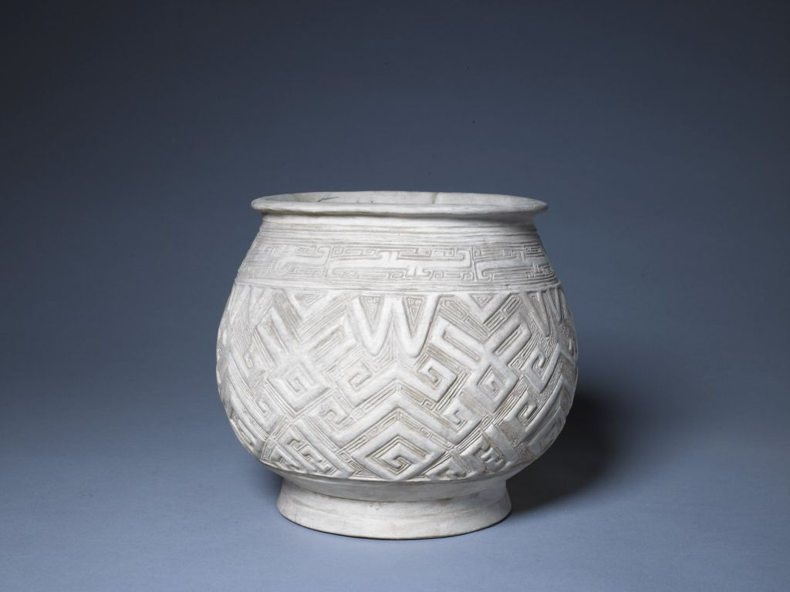
白陶刻几何纹瓿
商朝
以回纹作地衬托几何纹，显示出纹饰的层次感，从而显得华丽繁缛。
- 高: 20cm
- 口径: 18.6cm
- 足径: 15cm
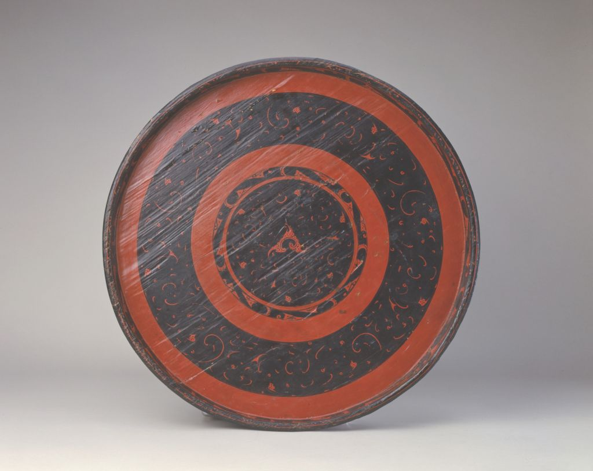
彩绘漆云凤纹大圆盘
西汉
木胎，髹黑漆，内底朱绘云凤纹，三首凤鸟为核心，沿面绘水波纹，外底书“李”字。
- 高: 3.7cm
- 口径: 44.1cm
- 足径: 38cm
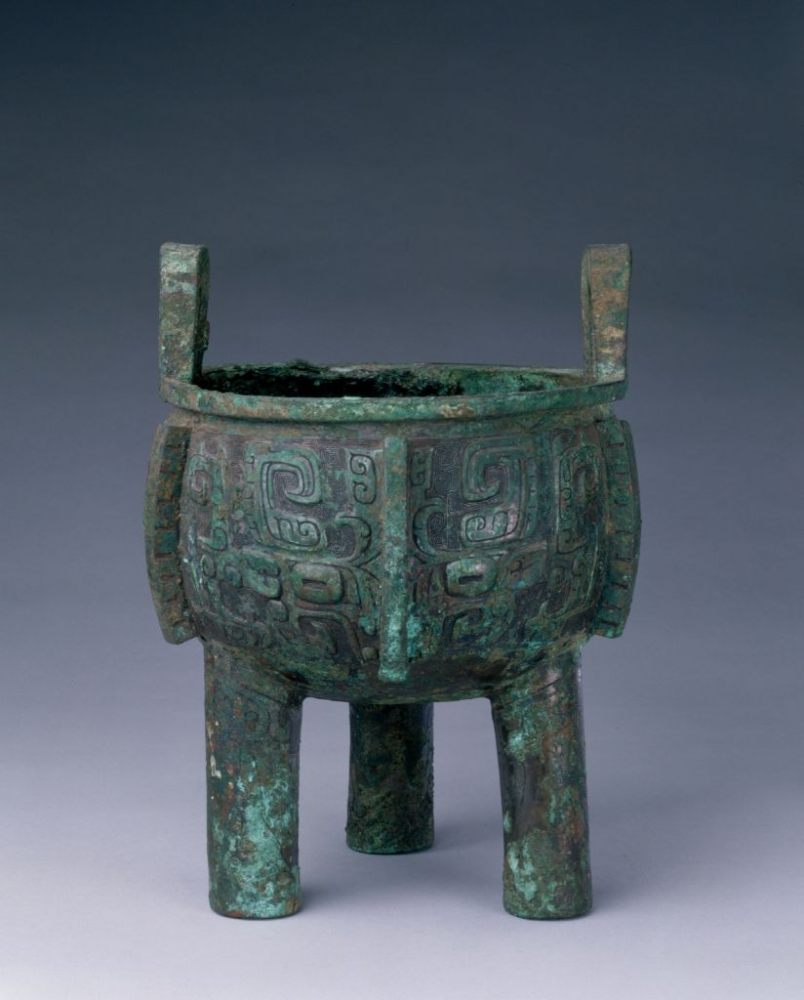
父乙鼎
商朝
鼎圆形，双立耳，三柱足，腹起六道扉棱。鼎身饰三组兽面纹，足饰蕉叶纹。
- 高: 28.7cm
- 口径: 24cm
- 重: 6.88kg
剔红山水人物葵花式盘
明永乐
盘为十瓣葵花式，盘心雕刻曲栏庭园，用漆肥润，雕刻圆熟劲健，磨工精细，藏锋不露。
- 高: 4.5cm
- 口径: 33cm
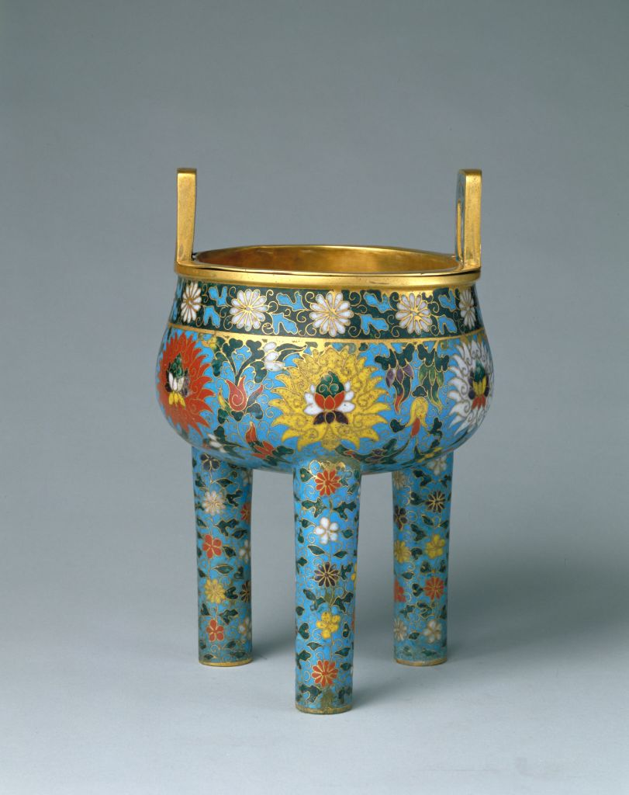
掐丝珐琅缠枝莲纹鼎式炉
元朝
珐琅质地细腻，釉面光亮，具有宝石般晶莹深邃之感。
- 高: 28.4cm
- 口径: 17.1cm
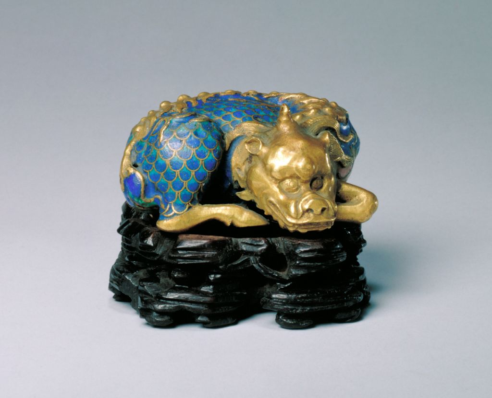
掐丝珐琅异兽镇纸
清朝
古人认为其能镇妖辟邪、分辨曲直。镇纸做工精良，鎏金厚实。帝王用之，当默涵深意。
- 高: 23cm
- 长: 78cm
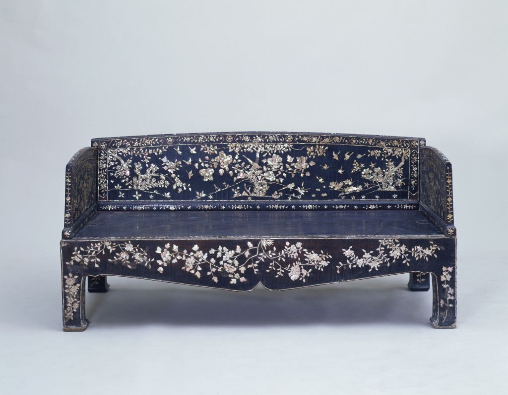
黑漆嵌螺钿花鸟纹床
明朝
明代此种黑漆嵌螺钿家具使用较广，椅凳、桌案、箱柜无不具备。
- 高: 86cm
- 长: 182.5cm
- 宽: 78cm
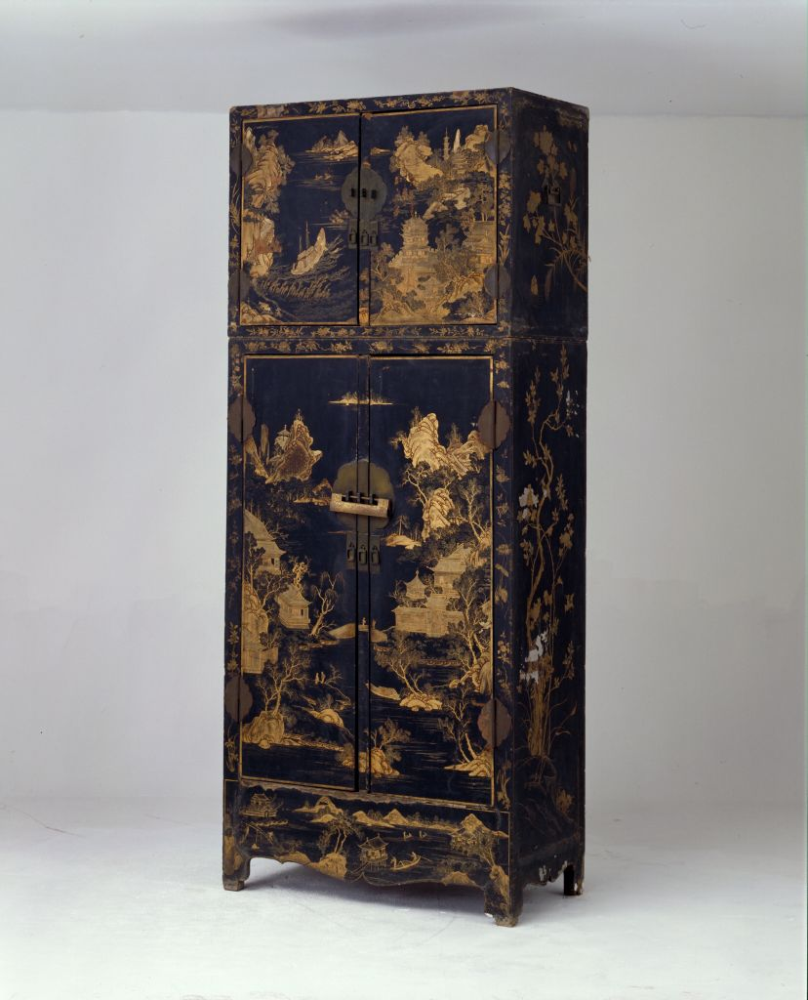
黑漆描金山水图顶箱立柜
明朝
根据档案登记记载，此柜为四执事库之物。四执事库为清宫北五所之一。
- 高: 207cm
- 横: 120.5cm
- 纵: 64.5cm
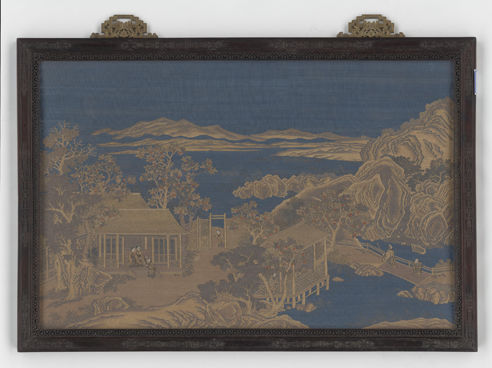
紫檀木边框缂金线加绣山庄果园图挂屏
清朝，挂屏两件成对，通过线与面的组合，使画面富有独特的立体感。
- 长: 86cm
- 宽: 144cm
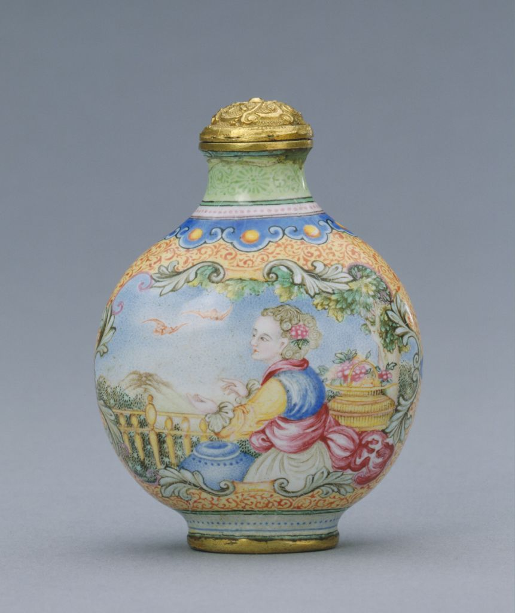
乾隆款画珐琅西洋人物图鼻烟壶
清朝
鼻烟壶作扁壶形，附铜鎏金錾花盖，中心署蓝色楷书“乾隆年制”四字。
- 高: 6cm
- 口径: 1.5cm
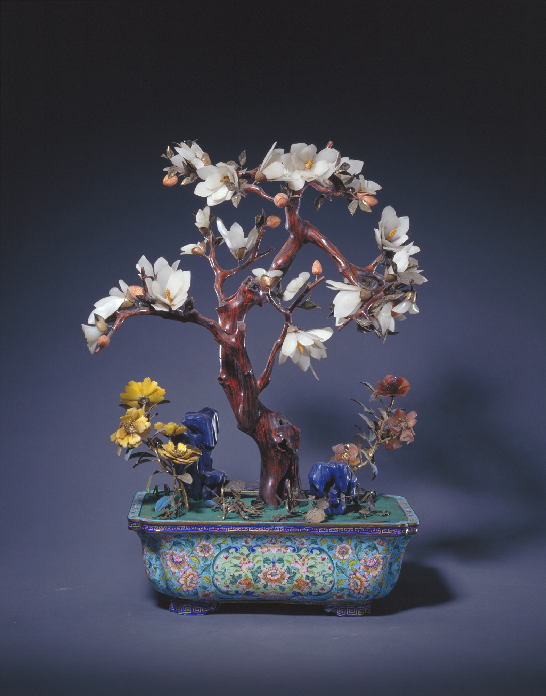
画珐琅长方盆玉兰盆景
清朝
玉兰花瓣使用的是精心打磨的料石，花朵用铜托和金属丝连缀而成。
- 通高: 47cm
- 盆长: 25cm
- 宽: 17cm
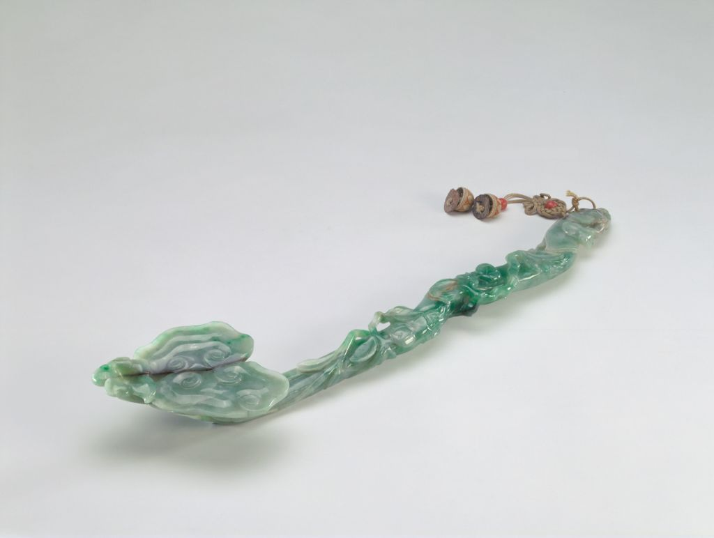
翡翠灵芝式如意
清朝
如意以整块翠琢成，灵芝形，周身遍琢小芝、花果等，翠色鲜艳。
- 长: 47.8cm